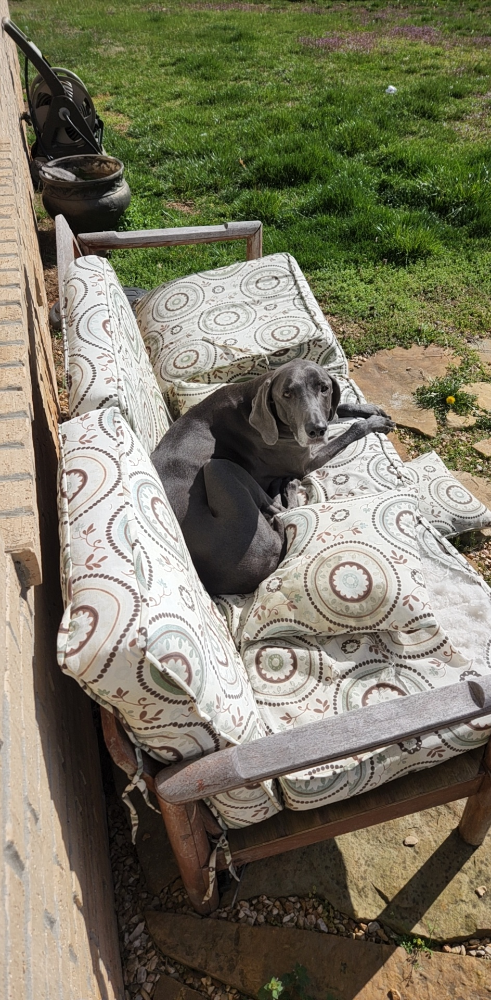

Here's a little bit about me.
I am Carlie Peters and I am a nerd, but that should not be a suprise to anyone in this class. I am working towards my associates in Computer Science. After OTC I plan to go to either MSU or SnT for a bachelor's degree.
I come from a family of five. I am the oldest of three girls, and the only one two still have my redhair despite us all being born gingers. Neither of my parents are gingers, but I have relatives on both sides that either have redhair or used to have redhair. My grandpa on my dad's side used to call me Pumkin Head.
My family also has a wonderful dog named Clyde.
Some other names of his are Clydesdale, Clyde Handsome Peters, and The Terd. He is sitting beside me as I write this. He used to belong two some neighbors of ours back in Texas, but three kids under the age of five plus two weimmer reiners was understandably a lot for them to handle. His favorite hobbies include stealing and eating whole loaves of bread, lying in the sun, snuggling on the couch, and killing bunnies to give as presents.
⚔I have had many popculture interests over the years with Star Wars and Harry Potter being the two big ones. I have tried, but I am not someone who can engage in media casually. I am someone who has to know everything about it. Other big interests in my life have been Minecraft which I make skins for. I grew up watching DanTDM, and I first got interested in coding because of Mr. Crayfish's mod developement videos. Sometimes you might find me playing Super Smash Bros in the Esports room, though I am not on a team nor do I have interest in joining.
Once I have a stable job I plan on writing my own fantasy book on the side and making a few indie games. I have actually started a club here at OTC called The Writer's Coalition with the president of the club, Isaac. If you have a book idea or just like to write and would like to talk to like minded people, you can ask me about joining after class and I can invite you to the discord. We are an official club this semester, but we have not set up a meeting time yet.